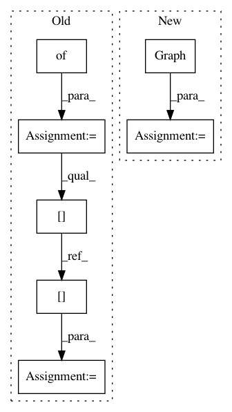

074d16ac217b9cddc04d093d019c61e393522eb5,autokeras/net_transformer.py,,copy_conv_model,#Any#,91
Before Change
def copy_conv_model(model):
node_old_to_new = {}
new_model_input = Input(model.input_shape)
node_old_to_new[model.inputs] = new_model_input
for layer in model.layers:
new_layer = copy_layer(layer)
old_input = layer.input
old_output = layer.output
new_input = node_old_to_new[old_input]
new_output = new_layer(new_input)
node_old_to_new[old_output] = new_output
return Model(new_model_input, node_old_to_new[model.outputs])
After Change
def copy_conv_model(model):
graph = Graph(model)
return graph.produce_model()
def to_skip_connection_model(conv_model):
In pattern: SUPERPATTERN
Frequency: 3
Non-data size: 7
Instances
Project Name: keras-team/autokeras
Commit Name: 074d16ac217b9cddc04d093d019c61e393522eb5
Time: 2017-12-30
Author: jhfjhfj1@gmail.com
File Name: autokeras/net_transformer.py
Class Name:
Method Name: copy_conv_model
Project Name: tensorflow/minigo
Commit Name: 39a106e526e70b5d64bf9f5404311eb490df6ea5
Time: 2018-06-12
Author: tmadams@google.com
File Name: inference_worker.py
Class Name:
Method Name: main
Project Name: jhfjhfj1/autokeras
Commit Name: 074d16ac217b9cddc04d093d019c61e393522eb5
Time: 2017-12-30
Author: jhfjhfj1@gmail.com
File Name: autokeras/net_transformer.py
Class Name:
Method Name: copy_conv_model